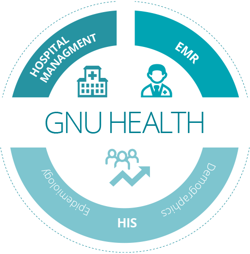

Features
Welcome to the Hospital Management Information System (HIS) of GNU Health!
The main areas of the HIS are:
Demographics and Community: Individuals, domiciliary units, families, socioeconomics, demographic & administrative information
Patient Management: Health encounters and evaluations, hospitalizations, clinical history and other information that makes up the electronic medical records (EMR)
Health Center: Finances & billing, stock & pharmacy, staff, suppliers, beds, operating rooms and other relevant tasks to manage the health center
Laboratory and Medical Imaging: Management of complementary orders such as lab tests, medical and diagnostic imaging requests and workflows
Health Information System: Statistics, analytical reporting on collected data from the community and participating health institutions, e.g. demographics and epidemiology


These areas involve multi-disciplinary teams, with different responsibilities. For example, demographics and status of the domiciliary units (DU) can be collected by social workers. The patient management by health professionals, the health center management by administrative personnel and accountants, and the information produced by the health center can be processed and managed by the health authorities.
This is just an example to show the importance of team work in GNU Health to get the best results in your community.
Packages
The GNU Health HIS component provides a comprehensive list of packages (modules) that can be installed in your instance to fit your health instutions needs.
The following table summarizes the current modules:
Package name |
Description / functionality |
|---|---|
health |
Core package. Includes demographics, patients,
evaluations, health centers, appointments, vaccinations,
medicaments, health conditions, health professionals and
other core models, reports, wizards and functionality.
|
health_accounting |
Functionality for Financial accounting and book keeping:
Billing, Chart of Accounts, General Ledger, Invoice handling,
journals…
|
health_archives |
Tracks legacy or paper-based patient health records.
|
health_caldav |
CalDAV functionality thar uses the Webdav server package.
|
health_caldendar |
The package integrates with health_caldav and adds
funtionality to:
|
health_contact_tracing |
Assessment, identification and followup of people who may
have come into contact with an infected individual in the
context of transmissible diseases / epidemics.
|
health_crypto |
Enhances data confidenciality, integrity and non-repudiation in
GNU Health. It provides message serialization and
digital signatures and verification for models such as
medical encounters, prescriptions, birth and death certificates,
among others.
It supports document digest/record integrity check
with hash functions, digital signatures and
GNU Privacy Guard plugin.
|
health_crypto_lab |
Provides cryptographic methods to laboratory package
|
health_dentistry |
Focused on dental health, it provides dentistry procedures,
treatments, reports and generation of odontograms.
|
health_disability |
The package applies the International Classification of
Functionality, Disability and Health (ICF) from the
World Health Organization and other indicators to
assess the integration of the person in the society.
|
health_ems |
Ambulance and Emergency Management System. |
health_federation |
Functionality to integrate the HIS into distributed health
networks using the GNU Health Federation
|
health_genetics |
Includes a comprehensive list of human genes and gene types,
family history and personal genetic information
|
health_genetics_uniprot |
Includes gene natural variants, proteins, phenotypes and
clinical significance associated to genes and their
health conditions from the UniProt Knowledgebase
(UniProtKB)
|
health_gyneco |
Patient gynecological and obstetric history. Prenatal, perinatal
and puerperium assessment and history. Screening for breast
and cervix cancer.
|
health_history |
Includes enhanced informatiion on medical history in
the patient evaluation report.
|
health_icd9procs |
WHO ICD9 - Volume 3 - procedures package
|
health_icd10 |
World Health Organization ICD-10 International Classification
of Diseases - 10th revision
|
health_icd11 |
International Classification of Diseases - 11th revision.
Based on WHO ICD-11 Morbidity and Mortality
(ICD-11 MMS).
|
health_icpm |
WHO International Classification of Procedures in Medicine. |
health_icu |
Information related to critical patients and Intensive Care Unit.
Includes Glasgow Coma Scale (GCS) and APACHE II.
Information on ICU patient roundings. The information divided
by systems - Neurological, Respiratory, Cardiovascular,
Blood & skin and Digestive.
|
health_icd10pcs |
The ICD-10 Procedure Coding System (ICD-10-PCS) is a
system of medical classification used for procedural codes,
used mainly in the United States.
|
health_imaging |
Medical imaging functionality including Dx imaging test types
and results.
|
health_inpatient |
Patient hospitalization management and history, including:
|
health_inpatient |
Calendar extension to link inpatient registrations |
health_inpatient_calendar |
Calendar extension for hospitalization events. |
health_insurance |
Manages insurances, policies, plans and discounts based on
products and/or categories.
|
health_iss |
The Injury Surveillance System package records all sort of
violent events (accidents, self-harm, sexual assaults, domestic
violence…). It also georeferentiates and contextualizes each
event and links them to the evaluation at the emergency ward.
|
health_lab |
Laboratory Management System. Includes lab test types with
analytes and their attributes. Manages lab test orders, labels,
workflows and validation, and lab test reports.
|
health_lifestyle |
Information about the individual lifestyle.
Eating habits and diet, sleeping patterns,
addictions, physical exercise, sexuality and
safety at work, driving and child safety.
|
health_mdg6 |
Incorporates the Millennium Development Goal # 6, to combat
HIV/AIDS, malaria and Tuberculosis.
|
health_ntd |
Is a metapackage to cover the
Neglected Tropical Diseases (NTDs).
|
health_ntd_chagas |
This package provides the functionality for the prevention,
detection and treatment of Chagas disease. It includes:
|
health_ntd_dengue: |
This module will have the functionality for the prevention,
detection and treatment of dengue fever disease. It includes:
|
health_nursing |
Nursing functionality for both outpatient and inpatient
settings, including roundings, procedures and
ambulatory care sessions.
|
health_ophthalmology |
Basic ophthalmology and optometry functionality
|
health_orthanc |
Extension of the medical imaging package to integrate
GNU Health with the Orthanc PACS server
|
health_pediatrics |
Main package for pediatrics. Neonatal information and
examination, APGAR scores, cogenital conditions,
metabolic screening tests, pediatric psychosocial
assessments, newborn identification.
|
health_pediatrics_growth_charts |
Metapackage to cover growth chart reports |
health_pediatrics_growth_charts_who |
World Health Organzitaion pediatric growth reports including
percentile and z-score charts.
|
health_profile |
Metapackage that includes socioeconomics, lifestyle,
genetics, ICD10, gynecology and obstetrics, pediatrics, lab
and hospitalization modules.
|
health_qrcodes |
Include QR-Code in reports related to patient, appointment,
newborn and laboratory
|
health_reporting |
Reports including demographics, population pyramid,
evaluations, top diseases, epidemics reports, aming others.
|
health_services |
Functionality to group orders and services related to a patient
evaluation, prescription or hospitalization.
It also allows invoicing specific items/lines
from the service document.
|
health_services_imaging |
Extension of the health_services package to cover
medical imaging services.
|
health_services_lab |
Extension of the health_services package to cover
laboratory services
|
health_stock |
Stock management and moves in different objects, products
and contexts within the health institution operation.
It includes, among others, medicaments, vaccines,
ambulatory care, hospitalization roundings and
prescriptions moves.
|
health_stock_surgery |
Extension of health_stock package to cover stock moves
related to medicaments and supplies used during surgeries.
|
health_surgery |
Includes the models and procedures for surgery management
and history. Preopreative assessment and evaluations,
Surgery team, RCRI, Surgery protocols, surgery
complications, postoperative directions,
Operating Room Schdeduler.
|
health_surgery_protocols |
The surgery protocols are a set of predefined rules and
guidelines that can be used in different surgical contexts.
Upon entering the surgery protocol in the surgery, many
fields will take a default values. For instance:
The underlying condition and the main surgical procedure
depends on the standard that has been implemented
(eg, ICD10, ICD11, ICPM..).
In this package, we are using ICD10 for disease coding.
|
health_webdav3_server |
The package is a webdav server so DAV clients can interact
with GNU Health HIS for appointments and other calendars.
The server is started with the command
“gnuhealth-webdav-server”.
Besides the Tryton framework, it also requires the
PyWebDAV3-GNUHealth package.
|
health_who_essential_medicines |
The package includes the medicaments and drugs listed on
the World Health Organization essential medicines.
|